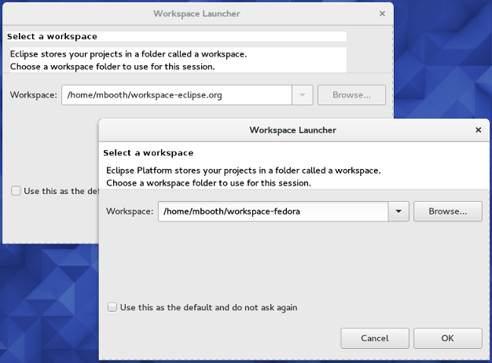
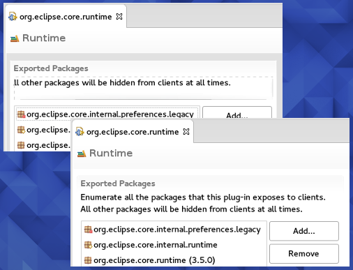

Recently, I have been adding a lot of patches to the version of Eclipse (Mars.1) that is packaged in Fedora Linux. This post attempts to explain why.
In my opinion, one of the chief benefits to packaging your software for a Linux distribution is the ability of the distribution to carry patches. These patches generally come in two flavours:
1. Bug-fixes back-ported from the upstream project.
This is useful when the upstream project fixes a bug that affects their users, but have not yet released a new version of their software. Some projects have very long or infrequent release cycles, so the Linux distro may want to cherry-pick fixes and carry the patches until the the upstream project releases a fixed version, at which time the patches can be dropped.
2. Bug-fixes that have yet to be merged into the upstream project.
This is useful when the Linux distro fixes a bug that affects their users that the upstream project does not yet know about. Maybe it was missed upstream because they develop mostly on Mac or Windows, or maybe the bug only manifests on this particular distro. Either way, the Linux distro can carry the patch and work with the upstream project to get it merged. Once again, when upstream releases a version containing a fix, the distro can drop the patch.
In both cases, the end result is a better user experience for your software on Linux.
Which brings me back to Eclipse... Since GTK was updated to 3.18 on Fedora there have been some extremely visible rendering bugs in various parts of the Eclipse IDE on Fedora. Most of these bugs have been fixed upstream in Eclipse's master branch, but it's going to be a long time until Eclipse does another release that includes these fixes, even if they are chosen to be cherry-picked for the Mars.2 release. In Fedora, we chose to back-port them to current release Mars.1.
The following screenshot shows the difference it has made to the background colours in the workspace chooser dialog. Eclipse downloaded from eclipse.org is on the left, Eclipse from the Fedora package is on the right:

You should see the same difference in other dialogs too, such as wizard dialogs and the EGit commit dialog.
The next screenshot shows the difference it has made to the form editor, where text labels used to be positioned incorrectly or oddly truncated. Again, Eclipse downloaded from eclipse.org is on the left, Eclipse from the Fedora package is on the right:

Many thanks to Eric Williams for getting these highly visible SWT/GTK bugs fixed and committed upstream at eclipse.org and thus allowing me to back-port them to Fedora. I'm sure our users will appreciate it!
If you are an Eclipse on Fedora user, you can get the latest patches when version 4.5.1-6 of the Eclipse packages hit the "updates-testing" repository either today or tomorrow:
$ sudo dnf --enablerepo=updates-testing update eclipse\*
And if you have time, please leave feedback (positive or negative) by adding a comment in Bodhi, the Fedora updates system.
Comments !